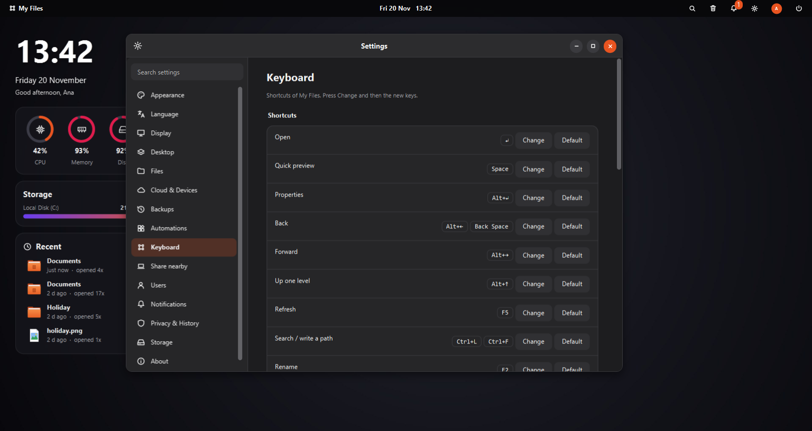

Keyboard shortcuts
Every shortcut of My Files can be changed in Settings › Keyboard: press Change, then the new key combination. FileExp warns you when a combination is already in use. Default restores one shortcut and Restore all shortcuts restores them all. Only the shortcuts you changed are saved.

My Files#
| Action | Default shortcut |
|---|---|
| Open | Enter |
| Quick look | Space |
| Properties | Alt+Enter |
| Back | Alt+← or Backspace |
| Forward | Alt+→ |
| Up one level | Alt+↑ |
| Refresh | F5 |
| Search / write a path | Ctrl+L or Ctrl+F |
| Rename (many if several are selected) | F2 |
| New folder | Ctrl+Shift+N |
| Copy | Ctrl+C |
| Cut | Ctrl+X |
| Paste | Ctrl+V |
| Select all | Ctrl+A |
| Move to Trash | Delete |
| Delete permanently | Shift+Delete |
| Undo | Ctrl+Z |
| Redo | Ctrl+Y or Ctrl+Shift+Z |
| Show hidden files | Ctrl+H |
| New tab | Ctrl+T |
| Close tab | Ctrl+W |
| Next tab | Ctrl+Tab |
| Previous tab | Ctrl+Shift+Tab |
| Split view | F3 |
| Copy to the other panel | Shift+F5 |
| Move to the other panel | Shift+F6 |
| Close My Files / clear the search | Esc |
While you type in the search box, the text-editing keys (Ctrl+C, Ctrl+V, Backspace, Space…) work on the text, not on the files.
Without a mouse#
Everything in FileExp can be done with the keyboard, and a screen reader (Narrator, NVDA, Orca) says what has the focus.
| Where | Keys |
|---|---|
| Anywhere | Tab / Shift+Tab move between the parts of the screen; a ring shows what has the focus (only while you use the keyboard) |
| Files (the grid) | Arrows move between files and folders, Home / End go to the first / last; Shift+arrows select several; Enter opens |
| Files | Menu key or Shift+F10 opens the menu of the selected item (or of the folder) |
| Menus | ↑ / ↓ move, → opens a sub-menu, ← goes back, Enter chooses, Esc closes and the focus goes back where it was |
| Dialogs | Tab stays inside the dialog, Enter confirms, Esc cancels |
| Settings | ↑ / ↓ between the pages; cards, colours and switches work with Space or Enter |
A screen reader says, for each file, its name, kind, size or details, tags and whether it is selected; for a dialog, its title and message.
Settings › Appearance › High contrast shows FileExp in black, white and yellow (focus) and cyan (selection), with every colour at 7:1 or more. If your system asks for fewer animations (Windows: Animation effects off; GNOME: animations off), FileExp has none either, also on the start screen.
Desktop#
| Action | Shortcut |
|---|---|
| Open My Files | Ctrl+Space |
| Settings | Ctrl+, |
| Lock | Ctrl+Alt+L |
| Full screen | F11 |
Quick look#
| Action | Key |
|---|---|
| Previous / next file | ← / → |
| Open in its program | Enter |
| Close | Space or Esc |